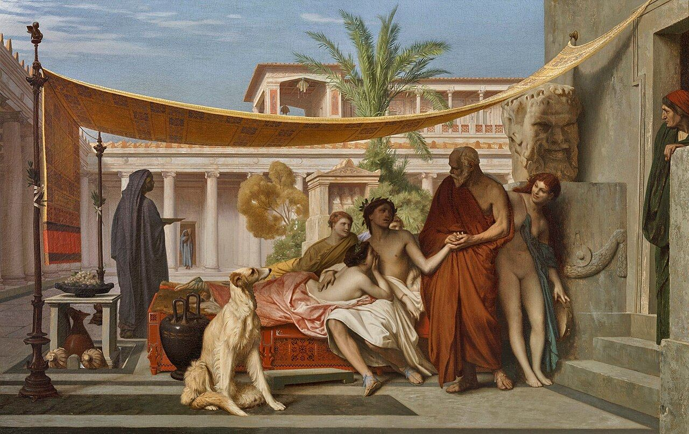

τί ἐστι;Jean-Léon Gérôme, Socrates Seeking Alcibiades in the House of Aspasia, 1861
One question, asked from the inside — and the four problems packed inside it, each followed until it either resolved against a text or opened onto ground the literature has not covered.
Everything below is the working-out of this paragraph. It is reproduced first because the order of discovery matters: the problems were not taken from the secondary literature and then checked against Plato — they were found by asking Socrates' own question and watching what the asking required.
Let us start where Socrates starts. Asking the same question, but in order to understand and explore what he was doing we will take a different tour. What does Socrates mean by asking “What is F-ness?”
P1Suppose I met Socrates and he asked me this. When I say F-ness is x, he would get from me other answers, y and z. Then he would show that y — or z, or both — contains “not-x”. We know what Socrates would do here. But the problem is here: in order for y to contain not-x, Socrates must know what x-ness is. Otherwise he would not be able to show that the interlocutor's other premises contain the negation of what he asserted initially.
P2When Socrates asks what virtue is, why would “virtue is savour taste” not be accepted as an answer? Because — as Benson mentions, and as the framework of the logic-of-questions book he uses shows — a question has a defined matrix that gives a boundary, a border to the answer, or makes a category in which we ask the question.
P3Having said this: if we say F is defined as x, y, z, then we have to define x as x₁, x₂…, y as y₁, y₂…, and so on. But now this would become an infinite regression.
P4Another aspect of this question is the “What is anything?” question. How do we answer that? Because we don't know anything that is “not belonging to anything.”
The objection has a precise target. It says the elenchus needs a standard — knowledge of x-ness — against which y can be measured and found to carry the negation. Without that standard the refutation is unearned.
Benson's answer is to deny the picture rather than meet the demand. The elenchus, on his reading, does not measure your claim against Socrates' knowledge; it exhibits that your own commitments cannot stand together. The general form is set out at Socratic Wisdom p. 33: Socrates elicits a belief p (the “apparent refutand”), then further beliefs q, r, s, then shows the conjunction false. Which member is false is never settled.
He proves it from the text rather than asserting it. In the Euthyphro argument reconstructed at p. 48, Socrates flags the premise that the gods quarrel as Euthyphro's — he finds those stories hard to swallow at 6a9–b3 — and then marks the sub-conclusion twice as not his own: “according to your argument” (7e1–3), “so you say” (7e9).
The objection fails as stated, but succeeds against Benson's answer. Pointing at Euthyphro explains why the argument runs in this conversation; it does not touch whether the premise is true. If the elenchus only ever exhibits inconsistency, it never finds anything out — it is a hygiene procedure, not a discovery procedure. That is exactly what Vlastos refused to accept, and it is why he went looking for more: “I could not reconcile myself to Grote's missionary of the examined life who was a dogmatist himself” (Socratic Studies p. 19 — Benson prints “[Socrates the] missionary,” silently replacing Grote).
This is right about Benson, and right about his source. He analyses “What is F-ness?” using Belnap and Steel's erotetic logic: a question has a subject, which presents its alternatives through a matrix plus one or more category conditions, and a request, which fixes how many alternatives to select and whether the selection claims completeness.
Savour-taste fails the matrix, and Benson lists three matrix conditions (§5.4). It fails all three at once, which is why it is not merely a wrong answer but not an answer:
| Condition | The test | Savour taste |
|---|---|---|
Coextensivex belongs to all and only F things | Do all virtuous things have it, and only they? | Fails both halves — standing firm at Plataea has no taste; a ripe mango has taste and no virtue. |
Explanatoryx explains why F things are F | Is this what makes them F? | Fails. Nobody is brave because of a flavour. The form sought is that “by which all the pious things are pious” (Euthphr. 6d9–11). |
Semanticx is what is called F-ness in all F things | Is this what the word picks out? | Fails. Aretē was never a word about flavour. |
One correction to the textbook story, which Benson makes himself: the tradition held that Laches, Euthyphro and Meno commit a category mistake by offering particulars rather than universals. That tradition “has been successfully challenged” (Nehamas 1975) — their answers are universals. What they violate is the completeness clause of the request. Laches offers “remaining in the ranks” as one option among several for other kinds of fighting (191b5–7); Euthyphro never meant “prosecuting the wrongdoer” as the only alternative (6d6–8); Meno produces a swarm.
Confirmed, with a consequence you should hold onto. On Belnap and Steel's own account the answer-space is inherited from the language, not constructed by inquiry: “Inventing a new category condition is like inventing a new word… amounts to a change in the language… we cannot make up category conditions as we go along” (p. 32). And they concede that fixing it is the hard part — even for prime, “the appropriate determinable is hard to isolate” (p. 83). Socrates cannot state the border either. He shows it, by running examples where the shape of the answer is uncontroversial: “quickness, bee-ness, strength, size, health, shape, and color” (Benson p. 102).
The chain you describe never closes: F → z → y → … → n. That is a regress. What actually kills answers in the dialogues is the chain curling back: at Meno 79b4–c9 Meno defines virtue as acquiring goods justly, and Socrates replies — “far from telling me what virtue is, you just say that an action is virtue if it is performed with a part of virtue… Or do you think one knows what a part of virtue is if one does not know what virtue itself is?” That is a circle.
The distinction matters because Socrates is not claiming that every definition circles. Fine's test: the argument “is aimed only against any definition in which the definiens makes essential reference to the definiendum” (p. 60). Porridge defined as oats and water is fine — oats and water are what they are independently of porridge. Justice is not what it is independently of virtue.
So the regress bites only if every term in the definiens must itself be known by definition. Four exits close it, and all four are in the corpus:
| Exit | How it stops the chain | Source |
|---|---|---|
| Restrict to contested terms | We settle number by counting and weight by weighing; we quarrel only over the just, the fine, the good. The chain stops where nobody is fighting. | Euthyphro 7b–d; Irwin's stronger version, moderated at Fine p. 60 |
| Terminate in familiarity | Grasping a definiens is not knowing its essence. Scientists inquired into water before knowing it is H₂O, into gold before distinguishing it from iron pyrites. | Fine pp. 52, 56 — the Dialectical Requirement needs only that the interlocutor think he knows |
| Recollection | The chain turns inward rather than outward and bottoms out in prenatal cognition. Leibniz objected that this regresses too; Plato would not mind. | Meno 81–86; Fine ch. 4 §2 |
| Indemonstrable first principles | Demonstration must terminate on pain of circularity; the terminus is reached by epagōgē and nous, not proof. | Aristotle, Post. An. 2.19 — and Rep. 510b, 511b for Plato's own unhypothetical starting point |
Press one step further. Socrates fixes the border (P2) by epagōgē over bees, shape and colour. But in doing so, has he not placed F in a category — and would that not need a definition of F? The answer splits the problem in two, and only one half survives.
Level one — the form. The examples exhibit a shape of answer, not a genus containing virtue. Three proofs from arithmetic, geometry and logic teach you what proving is without making those one subject. No definitions required; the objection does not bite.
Level two — the existence. For the demonstration to transfer, Socrates needs one substantive commitment: that virtue has such an answer at all. That is the Oneness Assumption, and the examples illustrate it rather than establishing it. This is precisely why he argues for it to Meno, the student of Gorgias, and never troubles to with Laches or Euthyphro.
So the regress does not disappear. It relocates. It stops being a regress about definitions and becomes a regress about what the question takes for granted.
Your reason is the right one, and it can be made exact. First a correction to a plausible-sounding diagnosis that is wrong about the source: it is not that a which-question must have a category condition with a non-empty complement. Belnap and Steel explicitly permit dropping them.
The real defect sits at the determinable. Benson notes in a footnote that the Socratic question should strictly be identified with the equivalence version of what-questions — ?! Equiv(Hx // Ax), where a determinable Hx supplies a list of descriptors and the alternatives are the biconditionals ∀x(Ax ≡ Hᵢx). For “anything”:
The limit case is not a curiosity at the edge of the method; it states the method's condition. The ti esti question is askable only where a genuine contrast exists, and Socrates draws that boundary from the outside, negatively: we do not quarrel over number, size or weight, because counting and measuring settle them; we quarrel over the just and unjust, the fine and shameful, the good and bad (Euthyphro 7b–d). That single fact does two jobs at once — it explains why “What is anything?” cannot be asked, and it is the same fact that stops the regress in P3, because each step down the chain narrows the contrast until none is left to draw.
Four problems, entered separately from four directions, and all four turn out to be about the question rather than the answer. P1 asks what entitles Socrates to run the argument; P2 asks what the question admits; P3 asks what the question takes for granted; P4 asks when the question can be put at all. That is one problem wearing four faces, and naming it is the whole move.
The Socratic “What is F-ness?” question carries presuppositions — F-ness is one thing, it has a unitary explanatory account, the question admits exactly one complete true answer. Those presuppositions are statements. Statements can be answers to prior questions, which carry presuppositions of their own. So the priority-of-definition problem can be recast as a regress of question-presuppositions, distinct from and prior to the regress of definitions — and because Belnap and Steel assign interrogatives truth values, the ordinary epistemic trilemma transfers to it wholesale.
Each source supplies one half and withholds the other. The thesis is the conjunction none of them makes.
| Source | Supplies | Withholds | Status |
|---|---|---|---|
| Benson 2000, chs. 5–7 | The erotetic analysis of “What is F-ness?”; (PD)=(P)∧(D); (V), (C), (A); (SF) | Never uses Belnap's presupposition; no regress above the level of definitions | Bridge, half-built |
| Politis 2015 | Unity, generality, explanatoriness as substantive presuppositions “in need of justification”; aporia prior to the ti esti question | A finite layered order, not a regress; no Collingwood, no erotetic logic | Nearest prior art |
| Meyer 2018 / 1986 | (PD) in erotetic form; the counter-direction — prior acquaintance presupposed by the question; anamnesis as terminus | No engagement with Geach–Vlastos–Benson–Fine; no Collingwoodean terminus | Under-read by the survey |
| Hintikka 2007, ch. 4 | The regress of question-presuppositions, stated outright; principal vs operative questions; Socratic application | The priority-of-definition debate is entirely absent | High partial |
| Belnap & Steel 1976 | Presupposition defined; interrogatives given truth values; the equivalence-question form | No application to Socratic definition | Apparatus |
| Collingwood 1940 | Absolute presuppositions as the terminus | Never applied to definitional questions | Apparatus |
The chronological record, kept so the route is checkable. The substance lives in §§1–4; this is the order in which it was found.
| # | Move | What it forced | Outcome |
|---|---|---|---|
| 01 | Is (PD) why Socrates asks at all? | Fixed the target as a principle, not an interpretation | Confirmed — Bloomsbury ch. 6 p. 137 |
| 02 | Is (PD) a tautology? Reverse it | Converse, not contrapositive | Reinvented (SF) verbatim — Socratic Wisdom p. 142 |
| 03 | Why “able to know”? | Ability attaches to stating, not knowing | Corrected into (V) — dispositional, hence testable |
| 04 | The elenchus asymmetry P1 | Vlastos's problem, sharpened | Benson's dissolution — p. 58, p. 59 |
| 05 | “This is just an escape” | Separated the procedural from the philosophical question | Named the price of the dissolution |
| 06 | Savour taste P2 | Recovered the matrix and category condition | Belnap p. 22; Benson pp. 102–110 |
| 07 | The definitional regress P3 | Circularity distinguished from regress | Meno 79b–c; four exits |
| 08 | The mango asymmetry | Rejecting needs the candidate, not the target | Your own solution — maps to gnōrimon hēmin |
| 09 | “What is anything?” P4 | Malformed, not hard | Corrected my diagnosis — Belnap p. 25 |
| 10 | The examples presuppose a category | Form vs genus; level one survives, level two does not | The pivot — regress relocates to the question |
| 11 | Is the erotetic regress in print? | Checked against Hintikka | Corrected me twice — pp. 83–84, p. 78 |
| 12 | Who is nearest? | Politis on the unjustified ti esti question | Nearest prior art — Introduction p. 6, chs. 3, 8 |
| 13 | Where exactly is the gap? | Benson used Belnap and stopped at the footnote | The opening — Socratic Wisdom p. 103 n. 16 |
Kept because a trail is only trustworthy if its wrong turns are visible.
| § | Move | Doing the work |
|---|---|---|
| 1 | Benson reached for erotetic logic in 2000 and stopped at the footnote | Socratic Wisdom p. 103 n. 16 — the gap shown, not asserted |
| 2 | The ti esti question's presuppositions are substantive and unjustified | Politis, Introduction p. 6 and ch. 8; White on Robinson |
| 3 | Those presuppositions are statements; statements answer prior questions | Belnap & Steel p. 5; Hintikka pp. 83–84 |
| 4 | So the priority-of-definition problem has a second, prior regress | The Oneness Assumption as the first link — §3 above |
| 5 | Three candidate termini, and what each costs | Collingwood's absolutes · Meyer's anamnesis · the non-terminating horn |
| 6 | Agrippa's trilemma transfers to interrogatives | The independent sub-thesis, and probably the strongest section |